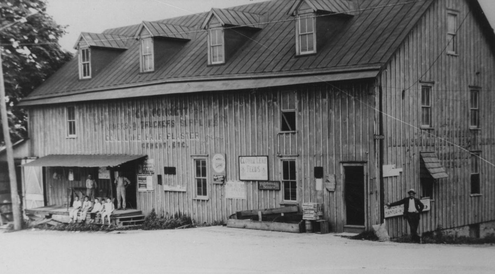
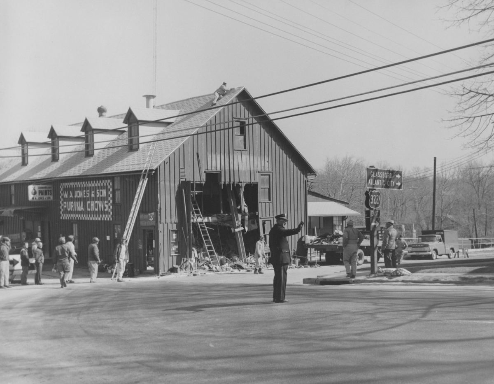

Mullica Hill Historic Walking Tour
The Old Mill
1880s · 1 South Main Street

On the morning of March 19, 1964, a tractor-trailer ended up inside this building, having arrived through the southwest wall.
The damage ran deep, and the truck's whole load of diesel finished in the basement. What happened next tells you what kind of town this was: farmers arrived with load after load of dirt and smothered the spill themselves. Hardware stayed shut for more than half a year; the feed counter never closed. And in the driest line of Images of America: Mullica Hill and Old Harrison Township, the Society's own 2018 book, "It was not the first accident to the building, nor was it the last."

The building and the railroad grew up together in the 1880s, and the paint on the boards still carries the name of an early proprietor. Read the photograph above: G. H. Poinsett, farmers' and truckers' supplies, coal, lime, hair, plaster, cement. George Poinsett sold out in September 1914, at a price the county weekly reported as ten thousand dollars, to the South Jersey Farmers' Exchange, whose first advertisement promised carloads of gluten, dairy feed, and bran "Now on Hand Ready for Delivery!" In time the corner passed to W. A. Jones & Sons, whose hardware and feed business was still holding it when the truck arrived in 1964.
Today the building houses several businesses, including the antique mall that gives it its current name, and it still anchors the north gateway of the village the way it did when the freight came by rail.
Around You Now
322 BBQ and Red Barn Burgers smokes barbecue inside the old mill, and the Old Mill Antique Mall, in business here since 1967, fills the rest of the building.